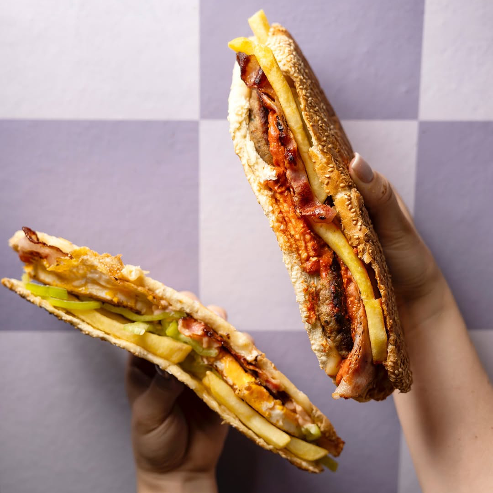

Crepes
Γλυκιές ή αλμυρές, φτιαγμένες στη στιγμή.

Burgers
Ζουμερά, φρεσκοψημένα & 100% Black Angus.

Sandwiches
Φρέσκα υλικά & καθημερινές επιλογές.

Sides
Για αυτούς που θέλουν το κάτι έξτρα.
Κρέπες • Burgers • Sandwiches • Sides • Drinks
Δες το Μενού
Γλυκιές ή αλμυρές, φτιαγμένες στη στιγμή.
Ζουμερά, φρεσκοψημένα & 100% Black Angus.

Φρέσκα υλικά & καθημερινές επιλογές.
Για αυτούς που θέλουν το κάτι έξτρα.